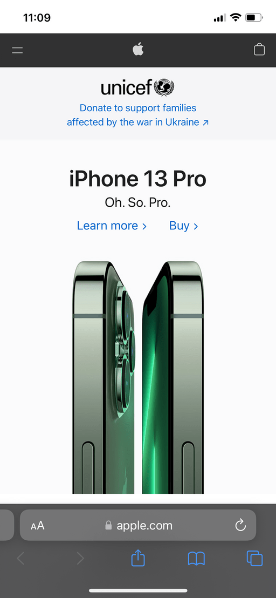
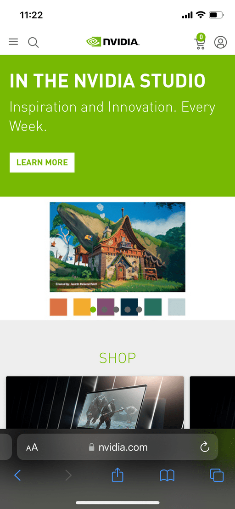

White Space
Apple Inc.
apple.com When you first load the Apple page you are greeted with a very clean interface. There is a gray navigation bar, and a large hero image which blends into the background. In this way they bring your attention to the first things they would like you to see. These things include their navigation, their product, and the links to learn about it or buy it. Using whitespace they bring your attention to where they want it, as they want you to buy their product.
Visual Heirarchy
NVIDIA Corporation
nvidia.com The first thing that you see on this page is a large hero image slideshow. These are the big announcements that NVIDIA wants to announce and advertise. These are what the new user would first look at and inspect. Further down there are small items which a user who is there for a speccific purpose would be looking for. These include shopping, gaming, and news. Finally, at the bottom, there are small links to very specific things that would be used less frequently. In this way they have used size to create a heirarchy of importance.
Repetition
Tesla Inc.
tesla.comUsing the same format tesla has used repetion to make an easy to navigate site. There is nothing suprising or confusing about how to get from one idea to another and it is clearly shown with little text what it is each section of their homepage is trying to relay to you. In this way repetion is being taken advantage of as it allows the user to understand what they can explore on the webpage.